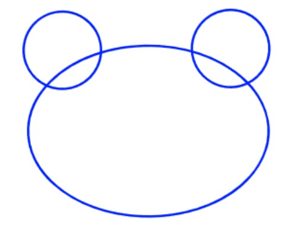
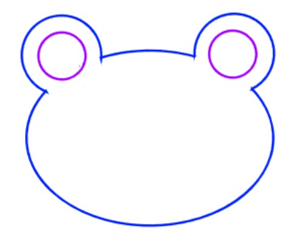
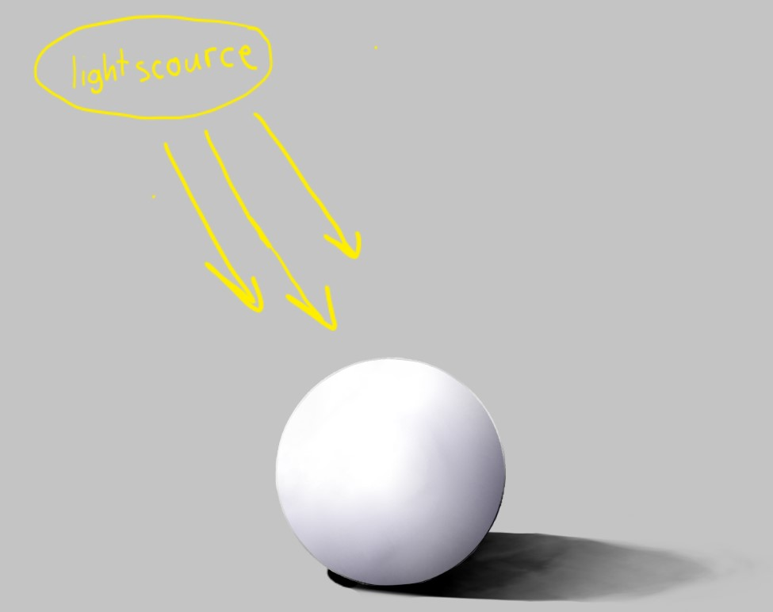

Different mediums require different types of paper. Color pencils use normal looking paper, but use something a little thicker than printer paper. Watercolors have a special thick watercolor paper. You can use acrylics on many things, as long as it isn't fuzzy or too smooth.
Using the right eraser is also important, because it should be able to erase color pencils without leaving any smudges. The best erasers are "high polymer". You can also use kneaded ereasers to mold it into any shape you want which helps erease reallly small spaces.
The type of color pencils don't matter that much if you know how to color, but good quality color pencils have soft lead which allows for pigmnted colors without pressing hard on the paper.
Make sure to use the right brush. Brushes come in many sizes, and shapes. Some examples of shapes are fan brushes, flat tip brushes, round tip brushes, and point tip brushes. To paint lines, there is a brush called a liner brush that you can use but i like to use point-tip brushes.
Paints should not be liquidy or chunky. The right consistency is when it looks like frosting and you can squeeze it out in an ice-cream swirl.
No matter how good you color or shade, your drawing will look bad if the proportions aren't right. It's a lot easier to move things around in your drawings so it is proportionate if you break down the shapes. Everything is either a potato (normal shape) or bean (skinny shape). Usually it's easier to draw lines than curves so the drawing might look boxy in the beggening. Pay attention to negative space (space in between shapes) as well. After the basic shapes are in the right place, then you can add details on top. It should be easy to erase the guidelines that don't show because you aren't pressing down hard. If you are drawing from a reference picture, you can estimate the size compared to your paper and measure some things and put it to scale. Also pay close attention to how the shapes relate to each other and the angle and curve of lines. Here is an example:
 when you color you should do the lightest values first, because it's easier to build up darker colors than to put lighter colors and in most mediums you can't put a lighter color on top of a darker one. Even in acyrlics white and yellow isn't as opaque as the others.
If you paint on cardboard, try brushing a little water on the cardboard before you put paint so that the cardboard won't drink up as much paint.
When you blend, you don't put on a color and try to force it into the other color. You lightly put the color and slowly build it up. When blending, there should not be a solid line.
Find a direction to add a light scource. The things closest to the light scource will be brighter, and anything that is blocked by something is shadow, because the light would not reach it. For 3D shapes would also have shadows, because there is a part of it facing away fromt he light scource.
Some shadows are blended and some have sharp lines. If you want to make a shape look 3D, then you add blended shading on the shape opposite to the light scourse. If the shadow is being caused by another object, then there will be a definitive line of where the shadow is. If there is a shadow caused by an object far away then you can blur the edges of the shadow a bit.
There are two types of shading, shading with saturationg and shading with black and white. Shading with saturation is when you use a more saturated color to add shadows, and shading with black and white is what it sounds like. Only shading with black and white desaturates all the other colors so your drawing will look dull. A good combonation is to add saturated colors to black and white, and use plain black and white only for the darkest shadows and brightest highlights.
The color you use to shade will be a little different depending on what the base color is. Most of the time, the shadows are blue and purple and light is yellow. You should use colors that go well together. For example, for a red base color, the shadows would be purple and the light would be orange.
In this image you can see where the light scource is. Notice how the shading on the sphere is fully blended and slightly purple, and the shadow caused by the shpere has sharp edges near the sphere, and has slightly blurred edges the farther it is.
Another thing you could do is add rim lighting. Rim lighting is when there is a small outline of light lining the shape.
Add an atmosphere. An atmosphere can be an very translucent glaze of a color or maybe many colors. An atmosphere makes the drawing look better because everything won't be the same tone. You don't have to add one, but it usually looks better with one. It is hard to add an atmosphere using traditional mediums but you can edit it if you take a photo.
Don't drop anything on the ground. Always wash off your brush otherwise it will dry and become stiff and hard. Only squeeze out as much paint as you need and close the cap. Wash out pallets, especially watercolor pallets because the colors left in the pallete will contaminate the colors whe you use it next time.When you see graphite on your eraser, rub it on the table untill the graphite is rubbed off.